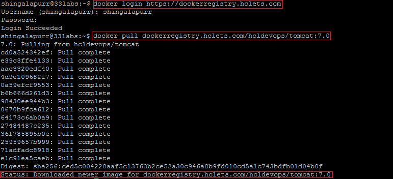

Managing Docker Images
How to push Docker images to HCL Private Docker Registry?
To push a docker image to HCL Private Docker Registry follow the following steps:
Step 1: Create a project in HCL Private Docker Registry via web browser using URL https://dockerregistry.hclets.com [ For more information visit Managing Project ] (Skip this step if you have already created project or have proper privileges to existing project)
Step 2: Login to HCL Private Docker Registry via Docker using command docker login https://dockerregistry.hclets.com
[ Enter your OVH LDAP username and password when prompted for the same ] [ For more information on docker login visit Docker Docs ]
Step 3: Now tag the docker image that you want to push to HCL Private Docker Registry using docker command docker tag <image_name> dockerregistry.hclets.com/<project_name>/<image_name>:<version> For example if you want to push tomcat docker image then tag it using the command docker tag tomcat dockerregistry.hclets.com/hcldevops/tomcat:7.0
[ For more information on docker tag visit Docker Docs ]
Step 4: Once the docker image has been tagged then perform a push to HCL Private Docker Registry using docker command docker push <image_name> For example, docker push dockerregistry.hclets.com/hcldevops/tomcat:7.0
[ For more information on docker push visit Docker Docs ]
Step 5: Now login to HCL Private Docker Registry via web browser and you will be able to see docker image tomcat:7.0 listed under the project hcldevops

How to pull Docker images from HCL Private Docker Registry?
To pull a docker image from HCL Private Docker Registry follow the following steps:
Step 1: Login to HCL Private Docker Registry via Docker using command docker login https://dockerregistry.hclets.com
[ Enter your OVH LDAP username and password when prompted for the same ] [ For more information on docker login visit Docker Docs ]
Step 2: Now execute the docker pull command docker pull <image_name> For example if you want to pull tomcat docker image then use the command docker pull dockerregistry.hclets.com/hcldevops/tomcat:7.0
[ For more information on docker pull visit Docker Docs ]

Copyright © HCL Technologies - All Rights Reserved.